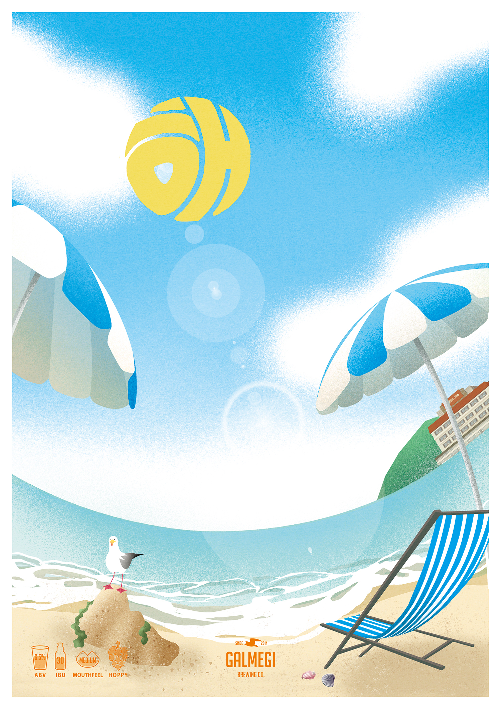
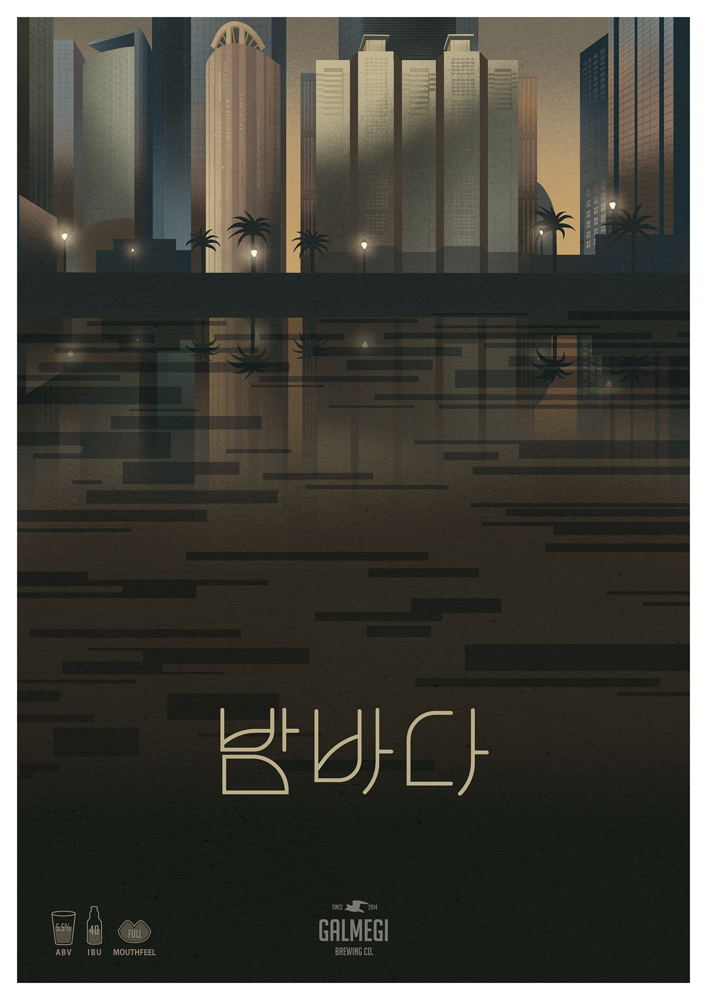
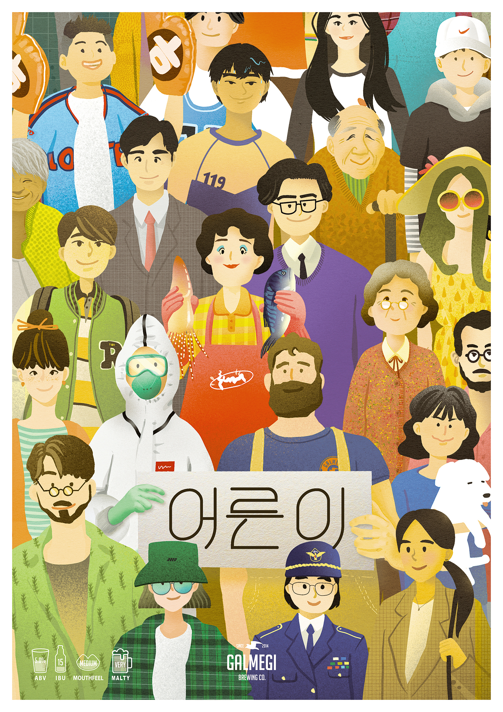

부산대표수제맥주
2014년 1월 부산 광안리에서 시작한 부산 최조 수제맥주 양조장. 오랜 양조경험을 가진 캐나다⠂미국⠂스코틀랜드 수제맥주 전문가들이 모여 브루펍으로 작게 시작한 갈매기 브루잉은 현재 광안본점 외에 해운대, 남포, 부산대, 경성대 등 부산 주요 지역에 프랜차이즈 가맹점을 두고 있으며, 전국의 더 많은 분들께 좋은 품질의 신나는 수제맥주를 제공하기 위해 끊임없는 노력을 기울이고 있습니다.
Founded in Gwanganli Busan in January 2014, Galmegi Brewing started off as a brewpub with a group of enthusiastic home brewers with various cultural backgrounds, with a mission of making world class beers in our adopted hometown of Busan. As of now, we have 6 locations including Gwangan Taphouse and franchisees in Haeundae, Nampo, PNU and KSU and continuously work our best to bring exciting, world class craft beers to Busan and the rest of South Korea.
BEER HIGHLIGHT
부산라거
BUSAN LAGER
라거 Lager4.5% ABV, 15IBU's

Light, Refreshing, Crisp
깔끔하고 청량한, 100% 순수몰트로 만든 품격 높은 ‘Dry hopped 라거’. 수제맥주 입문자에게 부담없는 맥주.
해
HAE
헤이지 아이피에이 Hazy IPA6.5% ABV, 30IBU's
Hoppy, Juicy, Tropical
한여름 태양 아래에서 익은 열대과일 같은 쥬시한 Hazy IPA(=뉴잉글랜드IPA). 강하지 않은 쌉싸름함과 꽉 찬 바디감이 특징
갈매기
GALMEGI IPA
아이피에이 IPA6.5% ABV, 65IBU's

Hoppy, Citrusy, Clean
아주 세련된 스타일의 현대적인 IPA. 코끝까지 자극하는 상큼한 시트러스와 솔 향이 아로마의 폭탄을 터뜨리는 갈매기 브루잉의 대표맥주
해돋이
SUNRISE
페일에일 Pale Ale5.0% ABV, 40IBU's
Fruity, Hoppy, Clean
복날의 무더위에도, 엄동설한의 매서운 추위에서도 부담없이 즐길 수 있는 페일에일. 향긋한 과일향과 깔끔한 끝맛이 특징
바닷바람
SEA BREEZE
고제 Gose4.5% ABV, 3.4PH

Sour, Salty, Citrusy(Yuja)
갈매기 역사상 가장 많은 트로피를 거머쥔 ‘바닷바람’. 국내산 유자와 천일염이 들어간 아주 독특한 사워비어(Sour beer)
밤바다
NIGHTSWIMMING
커피 스타우트 Coffee Stout5.5% ABV, 40IBU's
Coffee, Vanilla, Chocolate
진한 커피맛과 초콜릿 향, 흑맥주 특유의 쌉싸름함이 입안에서 찰랑대는 커피 스타우트. 이것은 커피인가 맥주인가 밤바다인가!
어른이
AMBER
앰버 Amber5.0% ABV, 15IBU's
Malty, Caramel, Toffee
몰트 본연의 구수함과 달콤함이 안정된 맛을 이루며, 홉의 쓴맛을 그다지 즐기지 않는 분들을 위한 맥주
COLLABORATION
구포만세 329
부산 북구청 + 갈매기브루잉(주) + 동서대디자인대학(브랜딩)
|| ‘독립’, ‘강인함’, ‘성취’의 표현 || 민관이 합동하여 구포의 밀로 탄생시킨 우리 밀맥주. 부산 북구청과 갈매기브루잉 주식회사의 양조 기술이 합쳐져 구포에서 자라는 밀로 만든 밀맥주가 탄생하였습니다. 구포 만세운동의 지역 역사가 구포만세 329와 함께 우리들이 마음 속에 영원히 기억되기를 바래봅니다. 구포만세 329 맥주는 현재 구포역 근처에 위치한 밀당브로이에서 절찬리 판매중입니다!